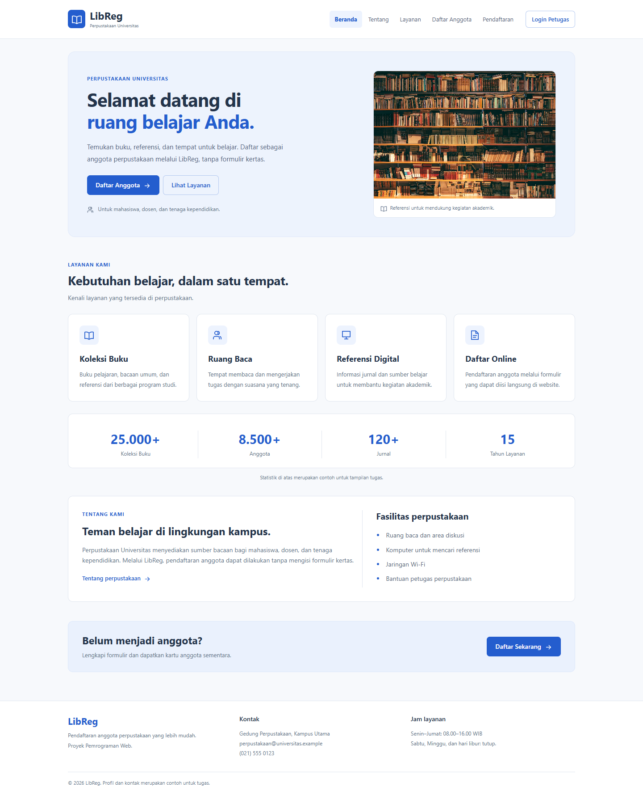

Tugas Pemrograman Web
Perancangan dan Implementasi LibReg
Pada tugas ini, aplikasi yang dibuat adalah LibReg - Aplikasi Pendaftaran Anggota Perpustakaan. Aplikasi ditujukan untuk perpustakaan perguruan tinggi yang sebelumnya masih melakukan pendaftaran menggunakan formulir kertas.
Pengerjaan berfokus pada bagian front end. Data anggota disimpan sementara menggunakan JavaScript dan localStorage, sehingga fitur pendaftaran dan pengelolaan dapat dicoba tanpa database server.
1. Deskripsi dan Ruang Lingkup Pekerjaan
Deskripsi aplikasi
LibReg merupakan website untuk memperkenalkan perpustakaan, menerima pendaftaran anggota, serta membantu petugas mengelola data anggota. Pengunjung dapat membaca informasi layanan dan mengisi formulir. Petugas dapat membuka daftar anggota untuk mencari, melihat detail, mengedit, atau menghapus data.
Tujuan pembuatan aplikasi ini adalah mengurangi penggunaan formulir kertas, membantu pemeriksaan data saat pendaftaran, dan mempermudah pencarian informasi anggota.
Pengguna sistem
- Calon anggota: mahasiswa, dosen, dan tenaga kependidikan yang akan mendaftar.
- Petugas perpustakaan: pengguna yang mengelola data melalui halaman petugas. Login pada versi ini masih berupa simulasi.
Ruang lingkup pekerjaan
| Bagian | Pekerjaan yang dibuat |
|---|---|
| Landing page | Header, hero, tombol daftar, layanan, fasilitas, statistik contoh, dan footer. |
| Navigasi | Navbar Bootstrap responsif, tautan antarhalaman, dan menu aktif. |
| Pendaftaran | Form identitas anggota, pemeriksaan kolom wajib, format email, dan NIM/NIP unik. |
| Pengelolaan anggota | Tabel, pencarian nama atau NIM/NIP, detail, edit, hapus dengan konfirmasi, dan notifikasi. |
| Penyimpanan | Data disimpan dalam localStorage agar tersedia setelah halaman dimuat ulang. |
| Login petugas | Form email/password dan sesi simulasi menggunakan sessionStorage. |
Peminjaman dan pengembalian buku, katalog buku interaktif, pembayaran, database server, serta autentikasi petugas sungguhan belum termasuk pekerjaan pada tahap ini.
2. Rancangan Halaman dan Struktur Menu
Website dibagi menjadi enam halaman. Header dan footer digunakan secara bersama agar pengguna mendapatkan susunan navigasi yang sama saat berpindah halaman.
| Menu / halaman | Nama file | Isi utama |
|---|---|---|
| Beranda | index.html | Informasi awal, layanan, fasilitas, dan tombol pendaftaran. |
| Tentang Perpustakaan | tentang.html | Profil singkat, visi, dan misi. |
| Layanan | layanan.html | Informasi koleksi, ruang baca, fasilitas, dan jam layanan. |
| Daftar Anggota | anggota.html | Tabel anggota dan tombol pengelolaan setelah login simulasi. |
| Pendaftaran Anggota | pendaftaran.html | Form data diri, validasi, dan hasil pendaftaran. |
| Login Petugas | login.html | Form masuk dan petunjuk akun demo. |
Struktur menu
LibReg
├── Beranda
├── Tentang Perpustakaan
├── Layanan
├── Daftar Anggota
│ └── Login petugas jika belum masuk
├── Pendaftaran Anggota
└── Login Petugas
└── Data Anggota
├── Cari anggota
├── Lihat detail
├── Edit data
├── Hapus data
├── Tambah anggota
└── Keluar
Rancangan susunan halaman
- Beranda: navbar → hero teks dan foto → empat layanan → statistik ilustratif → tentang dan fasilitas → footer.
- Pendaftaran: navbar → judul dan petunjuk → kolom identitas → alamat → tombol Reset dan Daftar → hasil pendaftaran.
- Data anggota: navbar → judul dan Tambah Anggota → jumlah anggota → pencarian/filter → tabel → tombol halaman.
- Login: navbar → form email dan password → tombol Masuk → keterangan bahwa login merupakan simulasi.
Pada layar kecil, navbar memakai tombol hamburger. Kolom formulir berubah menjadi satu kolom, sedangkan tabel dapat digeser ke samping jika lebarnya melebihi layar.
3. Desain UI Landing Page
Landing page menggunakan Bootstrap dengan penyesuaian pada warna, jarak, dan ukuran komponen. Navbar berlatar putih dengan logo biru. Hero memakai panel biru muda, judul yang lebih besar, dan foto perpustakaan. Font Segoe UI dengan cadangan Arial menjaga teks tetap mudah dibaca.
- Header: ikon buku, nama LibReg, dan menu navigasi.
- Hero: judul “Selamat datang di ruang belajar Anda.”, penjelasan singkat, foto rak buku, serta tombol Daftar Anggota dan Lihat Layanan.
- Layanan: empat kartu berikon berisi Koleksi Buku, Ruang Baca, Referensi Digital, dan Daftar Online.
- Statistik: angka ilustratif untuk jumlah koleksi, anggota, jurnal, dan tahun layanan. Terdapat keterangan bahwa angka tersebut hanya contoh.
- Tentang dan fasilitas: penjelasan perpustakaan serta daftar fasilitas dalam dua kolom.
- Footer: identitas aplikasi, kontak contoh, dan jam layanan.

4. Implementasi Website
Implementasi menggunakan HTML untuk struktur halaman, Bootstrap untuk komponen, CSS untuk penyesuaian tampilan, dan JavaScript untuk interaksi. Seluruh aset yang diperlukan tersedia secara lokal.
Form pendaftaran berisi nama lengkap, NIM/NIP, program studi atau unit kerja, alamat, telepon, email, dan jenis keanggotaan. Setelah semua data valid dan berhasil disimpan, aplikasi menampilkan pesan berhasil serta kartu anggota simulasi.
Petugas dapat mencari anggota berdasarkan nama atau nomor induk, membuka detail, mengedit, dan menghapus data. Saat menghapus, aplikasi menampilkan dialog konfirmasi terlebih dahulu. Pemeriksaan NIM/NIP unik juga dilakukan ketika data diedit.
Data anggota disimpan dengan key libraryreg.members.v1 pada localStorage. Oleh karena itu, data tetap tersedia setelah reload, tetapi hanya pada browser dan alamat situs yang sama. Penghapusan data situs pada browser akan menghapus data anggota tersebut.
Cara menjalankan
Buka file index.html, atau jalankan server lokal dari folder proyek:
cd LibReg
python -m http.server 4173Setelah itu, buka http://localhost:4173. Untuk mencoba pengelolaan anggota, gunakan email petugas@libreg.demo dan password library123.
Status publikasi
Website proyek tersedia di libreg.boysteven.com, dan kode sumber disimpan di GitHub Boyeep/LibReg. Perubahan kode pada folder kerja perlu disinkronkan ke repositori agar ikut diperbarui pada hosting.
Buka website LibReg · Source code GitHub · Baca blog pembuatan LibReg